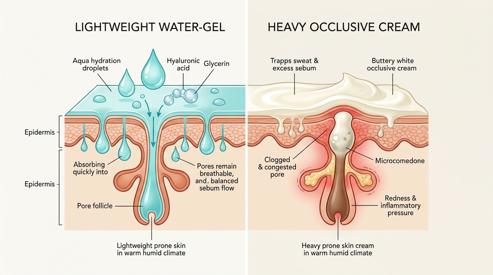
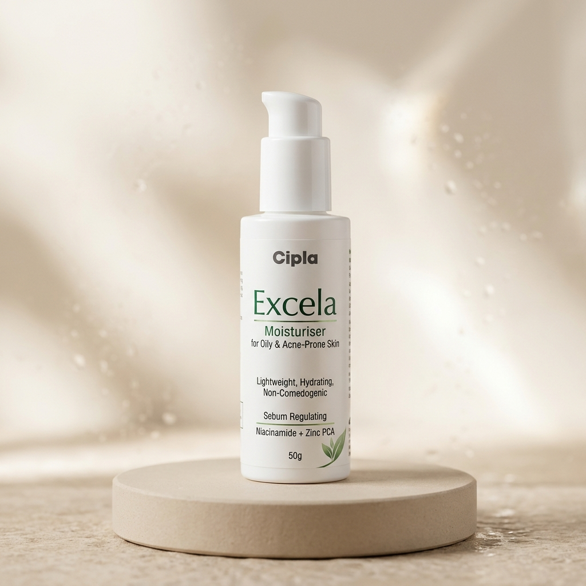
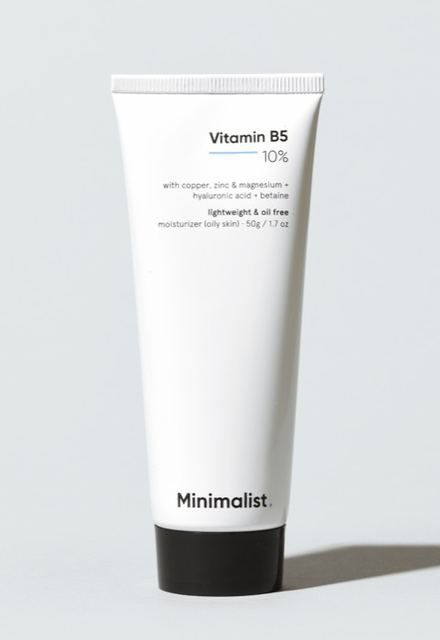

The Humidity Trap: Why Acne-Prone Skin Needs Moisture (Not Oil)
One of the biggest misconceptions in Indian skincare is that people with oily skin should avoid moisturizers entirely. When living in warm cities like Mumbai, Delhi, Chennai, Bengaluru, or Kolkata, stepping outside can make your face feel shiny within minutes. It feels intuitive to wash your face frequently with foaming cleansers and skip any lotion.
However, dermatologists see the disastrous results of this approach every single day. When you strip your skin's outer surface, your epidermal water barrier breaks down. This triggers trans-epidermal water loss (TEWL). In defense, your sebaceous glands go into overdrive, manufacturing thick sebum to stop water from escaping[1].
The result? You end up with skin that is greasy on the surface yet tight, itchy, and irritated underneath. The excess oil combines with dead skin cells and environmental dust, blocking pores and feeding acne bacteria.
Water-Gel vs. Heavy Cream: What Happens to Your Pores
The secret to balancing acne-prone skin in tropical climates lies in understanding the vehicle—the base texture of your skincare product.

Let us compare how the three standard moisturizer formats behave on Indian skin:
| Formulation Type | How It Feels on Skin | Pore Clogging Risk | Best Fit Climate & Skin |
|---|---|---|---|
| Water-Gel / Gel Recommended |
Absorbs in 30 seconds; weightless, cool, leaves zero sticky film or shine. | Extremely Low (Non-comedogenic) | Oily, acne-prone skin in warm, humid weather or monsoon seasons. |
| Lightweight Lotion | Smooth spread; takes 2 minutes to absorb; faint protective moisture sheen. | Low to Moderate | Combination skin, mild winter months, or skin recovering from retinoid peeling. |
| Heavy Cream / Butter | Thick, greasy paste; forms an occlusive seal that traps sweat and warmth. | High (Comedogenic for oily skin) | Severely dry, mature skin or extreme dry cold climates. Avoid if acne-prone. |
Ingredients Decoded: Green Flags vs. Red Flags
Marketing labels like "natural" or "dermatologist tested" do not guarantee that a bottle will not cause pimples. When shopping in Indian pharmacies or online stores, check the ingredient list for these specific ingredients:
✓ Green Flags (Pore-Friendly Hydrators)
- Hyaluronic Acid: Plumps skin cells with water without any oily residue.
- Glycerin: Gentle humectant that pulls moisture into the skin barrier[2].
- Panthenol (B5): Calms inflamed red spots and repairs peeling skin.
- Niacinamide (2%-5%): Strengthens the lipid barrier and controls excess oil flow.
- Zinc PCA & Enantia Chlorantha: Botanical and mineral extracts that regulate sebum output.
⚠ Red Flags (High Clog Risk)
- Isopropyl Myristate: Penetration enhancer with a high comedogenic rating.
- Coconut Oil: Highly comedogenic oil that easily blocks follicles.
- Heavy Shea & Cocoa Butter: Rich occlusives disastrous for oily faces in Indian humidity.
- High Denatured Alcohol: Causes temporary drying followed by rebound oil production.
- Synthetic Fragrances: Triggers allergic contact irritation and flare-ups.
Top 3 Dermatologist-Tested Oil-Free Moisturizers in India
These three formulas are widely prescribed by dermatologists across India for their safety profile, non-comedogenic vehicles, and reliable barrier support:

- Sebum Regulation: Enantia Chlorantha bark extract actively curbs oil flow by up to 20%[3].
- Velvety Matte Finish: Sinks in rapidly without stickiness under daily sunscreen.
- Hygienic Pump: Airless dispenser keeps the formula clean and active.

- Zero Oils & Zero Perfume: Pure aqueous gel with no emulsifiers or fragrance.
- Physiological pH 5.5: Maintains the skin's acid mantle to deter bacteria[4].
- Fungal Acne Safe: Completely free of trigger lipids for sensitive skin.

- Intense Barrier Relief: 10% Panthenol calms peeling caused by Benzoyl Peroxide or Adapalene[5].
- Zinc PCA Anti-Acne Action: Controls sebum shine and balances skin flora.
- Budget-Friendly: Highly effective formula accessible across Indian pharmacy platforms.
How to Layer Oil-Free Moisturizer with Acne Treatments
How and when you apply your moisturizer directly dictates its effectiveness. Here is the doctor-recommended morning and evening routine designed for Indian weather:
☀️ Morning Routine (Hydrate & Protect)
- Gentle Cleanser: Wash with a mild gel cleanser to remove overnight oil buildup without drying out skin.
- Oil-Free Moisturizer: Apply a pea-sized amount onto damp skin. Gently pat across cheeks, forehead, and jawline until absorbed.
- Matte Sunscreen: Finish with a broad-spectrum, non-comedogenic sunscreen (SPF 50 / PA++++). Wait 3 minutes before heading outdoors.
🌙 Evening Routine (Cleanse & Treat)
- Cleanse: Wash away pollution, sweat, and sunscreen residue with lukewarm water.
- Active Treatment: Apply your prescribed retinoid (Adapalene/Tretinoin) or Benzoyl Peroxide as directed by your doctor.
- Moisture Sandwich (If Peeling): Apply your oil-free gel right over your medicine to prevent overnight flaking and itching[6].
Watch: Dermatologist Explains Moisturizing Oily Skin
Still feeling skeptical about putting moisturizer on oily, breakout-prone skin? In this comprehensive masterclass, board-certified dermatologist Dr. Andrea Dray explains the science of barrier hydration, how to avoid comedogenic traps, and why stripping your skin only worsens breakouts:
Frequently Asked Questions
Do I really need a moisturizer if my skin is already oily and acne-prone?
Yes. Skin oiliness (sebum) and skin hydration (water content) are two completely different things. When you cleanse with acne washes or use drying treatments like benzoyl peroxide or salicylic acid, your skin loses moisture. In response, your sebaceous glands produce even more oil to compensate, which leads to clogged pores and breakouts. An oil-free moisturizer replenishes pure water into the skin without adding heavy oils.
What is the difference between an oil-free moisturizer and a regular moisturizer?
Regular moisturizers rely heavily on occlusive ingredients like mineral oil, petrolatum, coconut oil, and shea butter to trap moisture. While great for dry skin, these ingredients can easily clog pores in humid weather. Oil-free moisturizers use humectants (such as hyaluronic acid and glycerin) suspended in a water or gel matrix. They draw water into the upper skin layers without leaving a greasy residue.
How does Indian weather and humidity impact moisturizer choice?
In humid Indian cities like Mumbai, Chennai, Kolkata, or during North India monsoon months, high ambient humidity mixes with sweat and natural sebum. Heavy creams trap this mixture inside pores, feeding Cutibacterium acnes bacteria. Lightweight water-gels allow your skin to breathe while absorbing sweat and managing shine throughout the day.
Will an oil-free moisturizer interfere with my acne medicine?
No, it actually helps your medicine work better. Prescription retinoids (such as adapalene and tretinoin) and antibacterial gels (like benzoyl peroxide) frequently cause peeling, burning, and redness. Applying a gentle oil-free moisturizer restores the skin barrier, reducing side effects so you can tolerate your treatment consistently.
What ingredients should someone with acne avoid in moisturizers?
Avoid comedogenic ingredients including isopropyl myristate, isopropyl palmitate, coconut oil (cocos nucifera), heavy cocoa butter, artificial fragrances, and high concentrations of denatured drying alcohol. Look for non-comedogenic labels and formulations featuring glycerin, panthenol, niacinamide, and hyaluronic acid.
When in my skincare routine should I apply an oil-free moisturizer?
Apply your oil-free moisturizer right after cleansing (or after your active serum) while your face is still slightly damp. In the morning, follow with a broad-spectrum, non-greasy sunscreen. At night, you can apply your moisturizer before or after your prescription acne treatment to reduce dryness.
Peer-Reviewed Clinical References
-
[1]
Kligman AM, Mills OH. Acne cosmetica. Arch Dermatol. 2006;106(6):843-850.
View Landmark Study on PubMed (PMID: 4264344) ↗ -
[2]
Fluhr JW, Darlenski R, Surber C. Glycerol and the skin: holistic approach to its multifactorial actions. Br J Dermatol. 2008;159(1):23-34.
View Study on PubMed (PMID: 18510666) ↗ -
[3]
Chularojanamontri L, et al. Moisturizers for acne: What are their constituents? J Clin Aesthet Dermatol. 2014;7(5):36-44.
View Review on PubMed (PMID: 24847408) ↗ -
[4]
Schmid-Wendtner MH, Korting HC. The pH of the skin surface and its physiological importance. Skin Pharmacol Physiol. 2006;19(6):296-302.
View Study on PubMed (PMID: 16864974) ↗ -
[5]
Ebright JR, et al. Dexpanthenol in dermatology: modern view of skin barrier repair and healing. J Dermatolog Treat. 2020;31(2):112-118.
View Clinical Study on PubMed (PMID: 31613142) ↗ -
[6]
Del Rosso JQ. The role of skin care as an integral component in the management of acne vulgaris: Part 1. J Clin Aesthet Dermatol. 2013;6(12):19-27.
View Consensus on PubMed (PMID: 24386542) ↗ -
[7]
Thiboutot D, et al. Practical management of acne for clinicians: An international consensus. J Am Acad Dermatol. 2018;78(2 Suppl 1):S1-S23.
View Guidelines on PubMed (PMID: 29332704) ↗